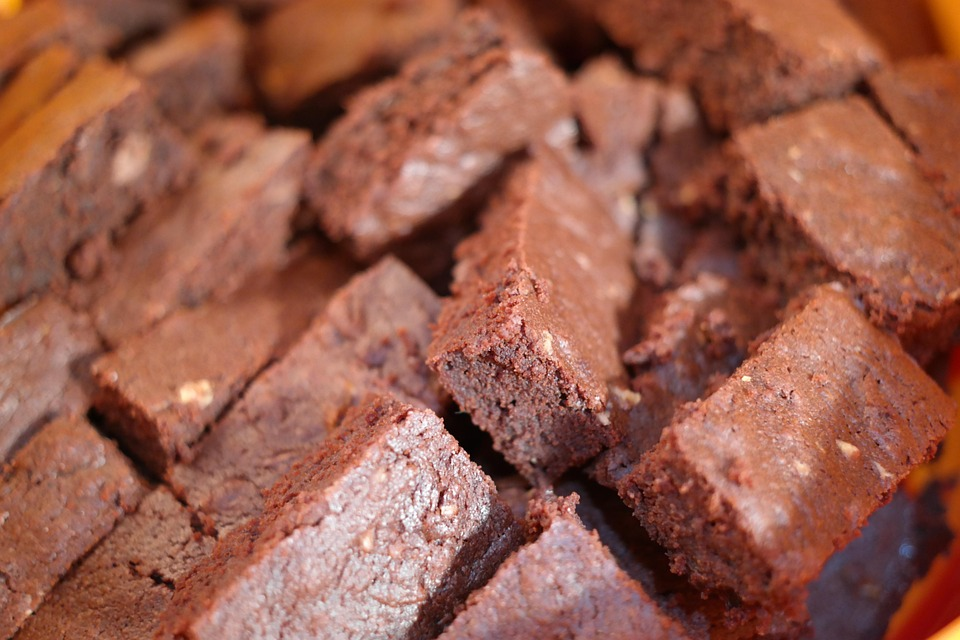

Quick and Easy Brownie Recipe

Brownie Recipe Overview
This brownie recipe creates chocolatey delicious batches of square heaven!
If you need a treat to bring to an upcoming holiday party, this quick and easy recipe will knock the socks off you and the other party guests!
Ingredients
- Baking Spray
- 2 cups of white sugar
- 1 1/4 cups of all purpose flour
- 1 cup of melted unsalted butter
- 4 large room temperature eggs
- 1/2 cup of cocoa powder
- 1 teaspoon of vanilla extract
- 1/2 teaspoon of baking powder
- 1/2 teaspoon of salt
- 1/2 cup of walnut halves
Steps
- Gather all the needed ingredients.
- Preheat the oven to 350 degrees Fahrenheit. Grease a 9 by 13 inch pan with the baking spray.
- Whisk the sugar, flour, melted butter, eggs, cocoa powder, vanilla extract, baking powder, and salt in a large bowl until everything is combined.
- Spread the batter into the greased pan.
- Sprinkle the top with the walnut halves.
- Bake the brownies for 20 to 30 minutes, until the top looks crinkled and a toothpick comes out with a few moist crumbs.
- Let the brownies cool in the pan on a wire rack before slicing into squares and serving.